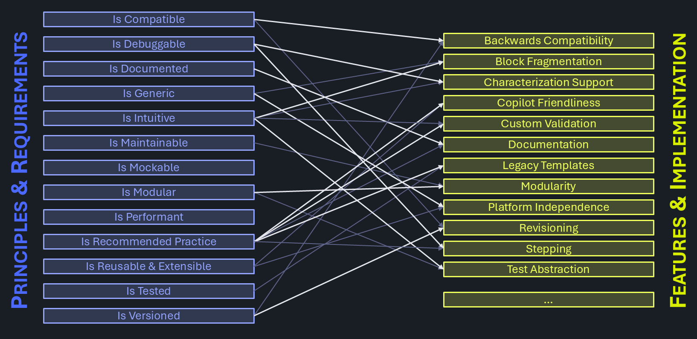

Features & Implementation
Derived from principles and requirements, a comprehensive list of features comprise the backbone of the C# Reference Architecture.
Design decisions made are documented with alternative options stated. The decision making process is captured, so that when requirements change, the logic chain can be revised to confirm choices made are still the best option on the table.
The feedback loop is closed by comparing the results (features) with the postulated principles and requirements derived from them.

Clean
- Alert Service - centralized messaging and exception handling
- Behavior Service - when logic gets a personality
- Code Structure - organize the source code entities
- Custom Validation - improve usability through argument checking
- Documentation - one-stop-shop for information seekers
- Extensibility - embrace incompleteness
- External Libraries - tap into others' IP
- Instrument Specific Features - access to specialized hardware benefits
MethodHandleType - delegate the work- Modularity - users can mix and match
- Multi-Target IG-XL Support - flexibility for different versions of IG-XL
- Offline Features - upvalue engineering time
- Persistent Data Storage - save and reuse information within and beyond job runs
Pinstype - context aware objects for pin lists- Platform Independence - remove friction and enhance fluidity between different testers
- Search & Trim - a straightforward approach to a challenging test technique
- Setup Service - manage device & tester setups and automate efficient transitions between
- Single- & MultiCondition - flexibility for uniform and specific test conditions
- SSN - Streaming Scan Network, Siemens' next gen Scan Technology
- Test Abstraction - reduce complexity by encapsulating details
- Transaction Service - being fluent in devices' dialects
- Unit- & Integration Testing - control quality and minimize defects
- Versioning & Compatibility - manage how functionality develops over time
Work in Progress
- Characterization Support - easily determine margins and process capability
- Copilot Friendliness - great output requires decent input
- Legacy Templates - a successful use model re-imagined
PatternInfotype - context aware objects for pattern & vector data- Stepping - Pre / Body / Post flow debug